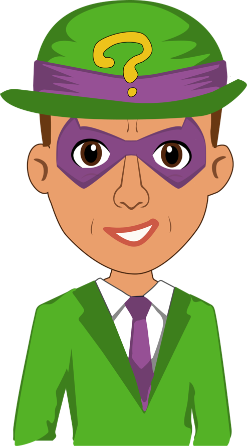

Elije un numero del 1 al 10


1. Historias extraordinarias y fantásticas que tratan de explicar fenómenos de la naturaleza y sucesos históricos.
2. Elige la familia léxica
3. ¿Cuál es la función de un boletín informativo?
4. ¿Qué aspectos se consideran al redactar el contenido de un boletín informativo?
5. ¿Qué aspectos se consideran en la edición de un boletín informativo?
6. ¿Qué es la jerarquización de la información?
7. ¿Para qué son útiles los mapas conceptuales y los cuadros sinópticos?
8. Son ejemplos de oraciones conectivas,excepto
9. ¿Cuál es la función del moderador en un debate?
10. Historias extraordinarias y fantásticas que tratan de explicar fenómenos de la naturaleza y sucesos históricos.
Sigue Intentando

¡BatiGenial!